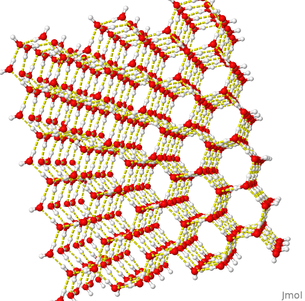

+ wireframe only - wireframe only
+ increase in thickness: wireframe 50
+ additional padding - spacefill
Note that the previous representation has been superimposed on the current one (it is there, but it is not seen). Try viewing them together with: color translucent
+ Change the background: background lightyellow
+ Label the partial charge of the atoms: calculate partialcharge; label %P
In Jmol, sequential commands can be separated by ";"
+ Try rendering surfaces:
- van der Waals: - dots on
- electrostatic potential:
- electrostatic potential: isosurface resolution 6 molecular map mep (or via Menu --> Surfaces)
- Vary the number and observe the resolution (1 to 6).Water
Structure and interactions
If you have access to the internet, go to File, Get mol, and type water. Alternatively, go to the image repository and search for h2o. Open the file in Jmol or, even simpler, drag it with the mouse and drop it into the Jmol graphic window. And voilà! The image appears in Jmol, but with the advantage of being manipulable by it.
This image file, as well as the others listed throughout this material, are stored in a directory specific to the study of Structural Biochemistry, and can be exported by right-clicking on File, Export, Export PNG+Jmol image. Portable Networks Graphics-PNG consists of image formatting with higher quality compression than GIF (Graphic Interchange Format), also has 24-bit colors, and is ideal for the internet.
Files saved in this way by Jmol can be viewed twice in a common image editor or in Jmol itself. In this case, the rendering formatting, size, labels, background, styles and colors previously defined for the image are preserved. Although Jmol does not export images with vector quality for publication (e.g.: PS-Post Script, EPS-Encapsulated Post Script, PDF-Portable Document Format native), there is a format that improves the final image of the structure, POV-ray.
In this case, it is necessary to install the POV-ray program to convert the exported file into File->Export->Export POV-ray image. POV-ray is a multiplatform and freely distributable program that enables the rendering of images with three-dimensionality (ray tracing). As an example, see the Figure below for a comparison of an image file of a nucleoprotein complex exported as PNG and the same file, as POV-ray, both at 459x magnification.
Returning to the previously loaded water molecule, rotate it with the mouse. Increase and decrease the size of the molecule with the mouse (middle button or Shift+right button). Returning to the water molecule as the first example, return it to its original size by typing in the Console zoom 0. If desired, move the molecule horizontally - Ctrl+left button, or rotate the molecule with Shift+right button.
About the Console
Learn now how to use the wealth of commands in the Console. It is nothing more than an environment for executing command lines and even Jmol programming, and it allows a wide range of actions on the molecule under study, making what can be obtained by accessing the Menu immensely flexible. To access the Console, go to File –> Console. Simple! You can type the listed commands, or copy and paste them into the Console prompt
Back to the water molecule, center it on the screen - type center. Return it to its original size with zoom 0. Represent it with a different rendering, like this:
| For example, the image below contains the result of the electrostatic potential experimented above.
You can also visualize the electrostatic surface of the molecule in the plane, by typing, for example:
isosurface resolution 6 contour 41 plane xy map mepWater and hydrogen bonds
Now experiment with three water molecules. Load the file “h2o-3.png” contained in the image repository page. Observe the hydrogen bond:
calculate hbonds; hbonds 0.1 # the last optional command, for thickness)
color hbonds magenta # change the color of the H-bondsNote that Jmol shows only one H-bond, although there are three water molecules available in the image. Why does the molecule on the left not seem to form an H-bond with any of the remaining ones?
To help you answer this question, measure the distance formed in the H-bond shown. To do this, select the H-donor atom (white sphere, CPK representation for hydrogen) by double-clicking and dragging the mouse pointer to the H-bond acceptor atom. Note the distance, around 0.2 nm or 2 Angstroms. This is the approximate distance for a typical H-bond (2-4 Angstroms).
Now repeat this action, but with the water molecule far away. Would this distance allow the formation of an H-bond?
Now see how hydrogen bonds appear in a more complex water structure, by loading the file “h2o-tot”. Visualize the H-bonds as before, and rotate the molecule.

Biomolecules and water
As can be expected from the above observations, water interacts strongly with biomolecules through H-bonds. Sometimes, and as will be seen throughout this material, water remains in the crystallographic crystals of proteins, and can also play a molecular role in the catalysis of reactions and interactions with ligands.
To exemplify this, load the file “hemogl.png”. This is the oxygen-transporting protein, hemoglobin. Type:
select protein; spacefill; color greyNow rotate the structure and notice how many water molecules (in red, represented by oxygen) are strongly adsorbed to the protein crystal, affecting its X-ray diffraction pattern.